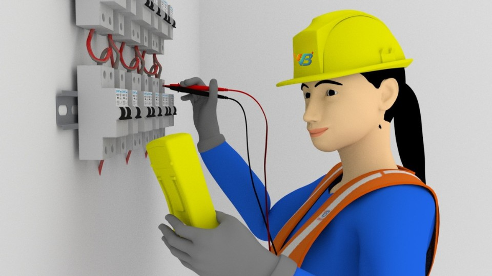

Harmonic analysis is the process of identifying the harmonic distortions that occur in the
electrical distribution system. VB provides turnkey solutions for Harmonic Analysis Services.
Our power system harmonic analysis services are proven and economical suiting the client needs.
Here we need to identify the source of harmonics and suppress them for a quality supply of
power.
Measurement of the power harmonics with Fluke electrical harmonic
distortion analyser. Perform the electrical power study analysis for
determining the electrical harmonic distortion and provide you an ideal,
technical, and economic solution.
VB is pioneer in conducting harmonic analysis in power system for determining the
power harmonic distortion.
Our expert inhouse team is equipped with both hardware and software for measuring
the power harmonics and conducting the harmonic analysis. The most common loads
that produce harmonics are variable speed drives, rectifiers, Arc welding etc.
Our team will come to facility as per schedule and record the required data with
harmonic analyzer i.e., fluke that must include, Line and transformer
impedances, Transformer connections, Capacitor values and locations (critical),
Harmonic spectra for nonlinear loads, power source voltages.
With this harmonic analysis service, all the major portions of the electrical
distribution system from supply source to all the load areas can be covered. The
most common loads that produce harmonics are variable speed drives, rectifiers,
Arc welding etc. Our team will come to facility as per schedule and record the
required data with harmonic analyzer i.e., fluke that must include, Line and
transformer impedances, Transformer connections, Capacitor values and locations
(critical), Harmonic spectra for nonlinear loads, power source voltages. With
this harmonic analysis service, all the major portions of the electrical
distribution system from supply source to all the load areas can be covered.

Harmonic Analysis
We perform the Power system studies of harmonic analysis with the measured data
at site. The collected harmonic distortion data and the electrical single line
drawing will be used in the electrical power study to determine the harmonics in
power system
Once the data required for the harmonic analysis is recorded with Fluke device,
our dedicated back-end team will get the data to perform proper scientific
analysis as per international standards. In power systems harmonic analysis is
conducted along with the load flow analysis to calculate both the linear and
nonlinear loads connected to the distribution networks. All the analysis will be
done in reputed electrical system softwares ETAP/SKM with reference to IEEE-519
international standards.
Filter Design and Installation
With reference to the measured harmonics in power system and the harmonic study conducted
to determine the electrical harmonics and power harmonic distortion
We will determine the abnormalities and the level of harmonics generated in the
electrical system. The harmonic study determined electrical harmonics will be studied
thoroughly and method of suppressing the electrical harmonic distortion will be
identified.
We design the filters for addressing the problem of harmonics identified in harmonic
analysis in electrical system
Once our back-end team completed the diagnosis of the system disturbances, we think over
treatment or solution of harmonics. We prepare detail reports in graphical format which
include order of harmonics, harmonic spectrum plots and harmonic waveform plots. Always
we prefer an ideal technical and economic solution of providing filters as near as
possible to the loads to avoid propagation of harmonic currents against other loads.
More Features
Harmonic distortions are one of the most common and irritating problems in industrial
environment. We need to identify the source of harmonics and suppress them for a
quality supply of power.
We need to measure these harmonics at various points in the system and perform proper
scientific analysis as per international standards. We use IEEE-519 standards for
harmonic analysis studies. Harmonic analysis is the process of identifying the
harmonic distortions occur in the electrical distribution system. These studies are
conducted considering the worst case of operation which gives the high amount of
harmonic distortions exceeding the standards.